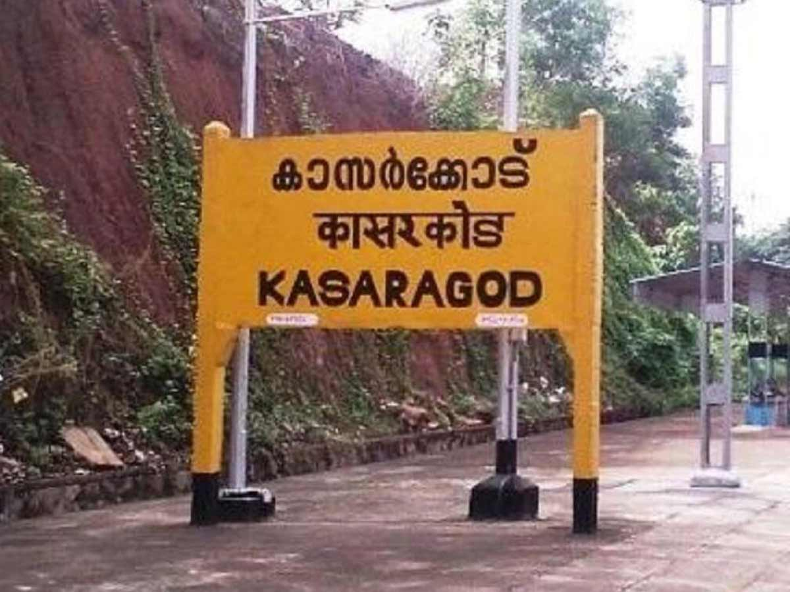
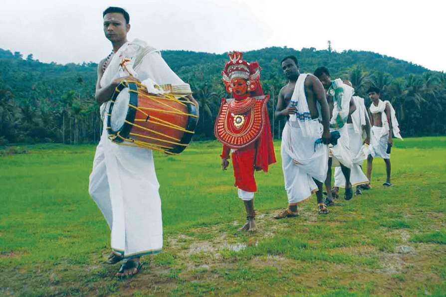
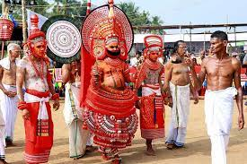

1 / 6

Kasargod
2 / 6

kasargod
3 / 6

kasargod
4 / 6

kasargod
5 / 6
.jfif)
kasargod
6 / 6

kasargod
Kasaragod district, which is located at the northern end of Kerala, was formed on 24th May, 1984. The District formed on the basis of the order of 19.05.1984 of GO (MS) number 520/84 / RD, comprising of Hosdurg and Kasaragod taluks which were part of undivided Kannur District. In the east the district is Kodagu and Dakshina Kannada districts of Karnataka, the Arabian Sea in the west, and the Kannada District of Karnataka in the north. The district is bounded by the Kannur district.
We can say that Kasaragod is the crown of the state Kerala, Land of many differnt languages, the history of the invasion and resistance, testimonies of historical forts, remainings of innovative culture of the modern stone age like ‘Chenkallarakal’, ‘Nannangatikal’, ‘Muniyarakal’, Inscriptions of historical rulers and their practices, Lush green land of highlands of western ghat, the midlands, the unique traditions and practice of worship. Kasargod is reputed for its practice of sharing the culture and languages.
The name Kasaragod resembles ‘a group of trees of Kanjira’. In the collection of poems of the poet Linkanna uses the term “Kasaragod” as ‘Thullu Rajaraller Malerite’. Kasaragod is no longer a group of Kanjira wood, land that is rich in lush green areca palm, coconut trees and bananas and hugged by beaches of Arabian Sea. Kasaragod is rich in history and heritage.
Kasaragod is a place where human settlements are from the Great Stone Age. Located in the Chenkal areas in midlands of the district. Pottery, copper, and ancient ironworks provide hints for ancient humans who lived and worship agriculture and nature. Korangar, Malakkudi, Mavilar, Koppalar and Malavattu are the tribes only seen in Kasargod.Tribal people like Velan, Kadaan, Narasanar, Madigar, Bakur, Moger and Pulaiyar are also found in the district as generations of their tribal forefathers . Some places and places of worship show that the Buddhist and Jainism of the Adi Tribes had dominated places of worship.
Kasaragod is a place where human settlements are from the Great Stone Age. Located in the Chenkal areas in midlands of the district. Pottery, copper, and ancient ironworks provide hints for ancient humans who lived and worship agriculture and nature. Korangar, Malakkudi, Mavilar, Koppalar and Malavattu are the tribes only seen in Kasargod.Tribal people like Velan, Kadaan, Narasanar, Madigar, Bakur, Moger and Pulaiyar are also found in the district as generations of their tribal forefathers . Some places and places of worship show that the Buddhist and Jainism of the Adi Tribes had dominated places of worship.
Many Arab travellers, who came to Kerala between 9th and 14th centuries A.D., visited Kasargod as it was then an important trade centre. They called this area Harkwillia. Mr.Barbose, the Portuguese traveller,who visited Kumbla near Kasargod in 1514, had recorded that rice was exported to Male Island whence coir was imported. Dr.Fracis Buccanan, who was the family doctor of Lord Wellesly, visited Kasargod in 1800. In his travelogue, he has included information on the political and communal set-up in places like Athiparamba, Kavvai, Nileshwar, Bekkal, Chandragiri and Manjeshwar.
Kasargod was part of the Kumbala Kingdom in which there were 64 Tulu and Malayalam villages.
When Vijayanagar empire attacked Kasargod, it was ruled by the Kolathiri king, who had Nileswar as his headquarters. It is said that the characters appearing in Theyyam, the ritualistic folk dance of northern Kerala, represent those who had helped king Kolathiri fight against the attack of the Vijayanagar empire.
During the decline of that empire in the 14 century, the administration of this area was vested with the Ikkeri Naikans. They continued to be the rulers till the fall of the Vijayanagar empire in 16th century. Then Vengappa Naik declared independence to Ikkeri.
Kasargod was under the rule of Ezhimala dynasty. During the period of the reign of Ezhimala Dynasty Nandan Maha Raja, this region was developed from Gudalur to the north of Coimbatore. In the 14th century, Kasaragod, which became part of Kolathiri, ruled the Muthu Dynasty. The king of this genus was known as Kolathirimar.
By the end of Thalikkotta War of 1565, the Vijayanagara empire began to decline and the empire was divided into provinces ruled by the provinical kings. Ikkeri Naika Dipriya (also known as Kelji Naikkaka DTP) was the kind of dynasty. The area of Ikkeri Naikka Tipas was included in the northern part of Kasaragod and part of Karnataka, including Udupi and South Kannada districts. During this period Bekal grew up as a base for establishing the dominance of Malabar. Considering the economic significance and the importance of the security of the province decided to construct a fort at Bekal. The construction of the fort was initially completed in the days of Shivappa Naik. The construction of the fort is to defend the invasion of foreign forces. Soon the structure of the fort was completed. Chandragiri Fort was constructed during the same time. There are many interpretations in the history of the construction of Bekal Fort. The Bekal Fort was built by the Kolathiri Dynasty and later the Sivappa Naik captured it from them. Another story is Shivappa Naik in the Ikareri Dynasty himself built the fort .
Hyder Ali, the Mysore Sultan, invaded the Ikkeri dynasty in 1763 and conquered the fortresses of Malabar. However, failing to capture the Thalassery fort, Haider Ali returned to Mysore and died in 1782. Later his son Tipu Sultan conquered Malabar and gave up on the basis of the Treaty of Srirangapatnam with the British. Tipu Sultan died in 1799.
In February 1800, Lord Wellesley deputed Francis Buchenan to visit the territory of the English East India Company to study the areas of the region including Mysore under Srirangapatnam agreement. On January 16, 1801, he went to Kavvayi, near the southern edge of the district and went back to Mangalapuram on 23rd of the same month. In his notes, Buchanan refers to the ancient social, cultural and political life that existed in the district during the early 19th century.
In 1804, these areas were colonized by British India, with the Neeleswaram and Kumbhala dynasties. On 16th April 1862, the South Canara district became a part of the Madras province and now it is part of the Kasaragod district and moved to Kasaragod taluk. The same status continued until the creation of the state of Kerala in 1956 after independence.